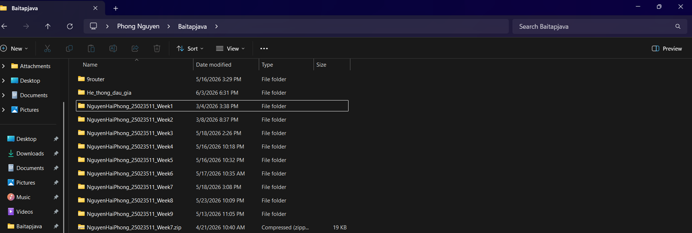

Xin chào, tôi là
Nguyễn Hải Phong.
Sinh viên Công nghệ thông tin.
Chào mừng đến với Digital Portfolio của tôi! Trang web này được xây dựng để tổng hợp và thể hiện kiến thức, kỹ năng số tôi đã tích lũy qua học phần Nhập môn Công nghệ số và Trí tuệ nhân tạo (CNS&AI). Mục tiêu của tôi là lưu trữ có hệ thống các sản phẩm cá nhân, minh chứng năng lực ứng dụng AI và các kỹ năng làm việc trong môi trường số chuyên nghiệp.
- Chuyên ngành: Mạng máy tính và Truyền thông dữ liệu
- Trường: Đại học Công nghệ (UET) - Khoa Công Nghệ Thông Tin
- MSSV: 25023511
- Lớp: CN15
- Ngôn ngữ: Java, C++, Python
- Sở thích: Lập trình, Tối ưu hệ thống phần cứng
02. Các bài tập thành phần Hệ thống hóa kết quả dự án

Bài 1: Thao tác cơ bản với tệp tin
Trình bày cấu trúc cây thư mục tối ưu dành cho sinh viên CNTT, quy tắc đặt tên tệp chuẩn hóa giúp lưu trữ khoa học và dễ dàng truy xuất dữ liệu trên máy tính cá nhân.
Xem Ảnh Minh HọaBài 2: Tìm kiếm & Đánh giá thông tin
Áp dụng linh hoạt trên 4 toán tử tìm kiếm nâng cao của Google (site:, filetype:, ngoặc kép, dấu trừ) để truy xuất tài liệu học thuật chuyên sâu và đánh giá nguồn tin qua bộ tiêu chí CRAAP.
Xem Báo Cáo PDFBài 3: Viết Prompt hiệu quả
Báo cáo thực hành kỹ thuật Prompt Engineering. Áp dụng kỹ thuật gán vai trò, bối cảnh và định dạng đầu ra để nâng cấp câu trả lời của AI thành các phân tích chuyên sâu (tóm tắt, tạo bộ câu hỏi).
Xem Báo Cáo PDFBài 4: Công cụ hợp tác trực tuyến
Xây dựng quy trình làm việc nhóm chuyên nghiệp. Quản lý task qua Asana, đồng soạn thảo tài liệu trên Google Docs, lưu trữ phân tầng trên Drive và giao tiếp, xử lý rủi ro qua Discord.
Xem Báo Cáo PDF
Bài 5: Sáng tạo nội dung với AI
Sản phẩm video nội dung số chất lượng cao được thiết kế bằng việc kết hợp tư duy sáng tạo của bản thân và các công cụ Generative AI (Midjourney, Canva AI).
Xem trên YouTubeBài 6: AI có trách nhiệm
Phân tích ranh giới giữa hỗ trợ và gian lận học thuật. Trình bày "Bộ 7 nguyên tắc cá nhân" cốt lõi: minh bạch trích dẫn, luôn đối chiếu xác thực thông tin, và không sao chép nguyên văn.
Xem Báo Cáo PDF03. Đánh giá bản thân Tổng kết dự án
Trải nghiệm và cảm nhận cá nhân
Quá trình xây dựng Portfolio kỹ thuật số này là một hành trình giá trị giúp tôi nhìn lại toàn bộ nỗ lực trong suốt học kỳ. Thay vì nộp các bài tập rời rạc, việc hệ thống hóa mọi thứ thành một Website HTML/CSS hoàn chỉnh giúp tôi ứng dụng trực tiếp kiến thức lập trình chuyên ngành. Việc tự tay thiết kế cấu trúc, biên tập nội dung và tối ưu hóa UX/UI không chỉ củng cố tư duy logic mà còn mang lại sự tự hào khi hoàn thành một sản phẩm số chuyên nghiệp mang đậm dấu ấn cá nhân.
Những kiến thức và kỹ năng đắt giá nhất
- Kỹ sư câu lệnh (Prompt Engineering): Hiểu sâu cơ chế xử lý ngôn ngữ tự nhiên của AI, biết cách tối ưu hóa đầu vào để khai thác tối đa sức mạnh của công cụ.
- Hợp tác trực tuyến & Quản trị rủi ro: Thành thạo hệ sinh thái công cụ (Asana, Drive, Discord) và biết cách xử lý các sự cố thực tế như trễ deadline hay xung đột dữ liệu.
- Liêm chính học thuật: Nhận thức rõ ràng, xây dựng tư duy phản biện sắc bén trước khối lượng thông tin khổng lồ do AI tạo ra.
Điểm tâm đắc & Thách thức đã vượt qua
Tâm đắc nhất: Tôi đặc biệt tự hào với việc đúc kết thành công "Bộ 7 nguyên tắc cá nhân về sử dụng AI có trách nhiệm". Đây sẽ là kim chỉ nam cho đạo đức nghề nghiệp IT của tôi sau này. Đồng thời, trải nghiệm lập trình giao diện Portfolio này hoàn toàn bằng mã nguồn cũng là một dấu ấn tuyệt vời.
Thách thức: Khó khăn lớn nhất là việc chọn lọc, cô đọng nội dung từ hàng chục trang báo cáo của 6 bài tập để đưa lên web sao cho ngắn gọn, trực quan mà vẫn đáp ứng trọn vẹn tiêu chí đánh giá xuất sắc (Rubric). Tôi đã phải liên tục tái cấu trúc bố cục và tinh giản ngôn từ để tối ưu hóa trải nghiệm người đọc.